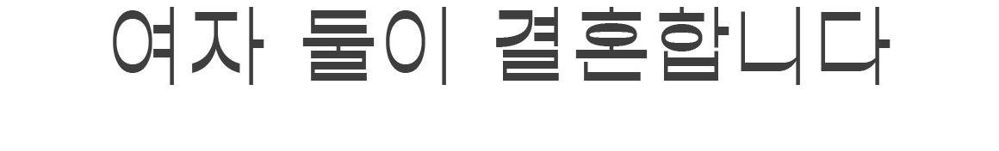

[’新 모던패밀리’의 가족사진] <1>레즈비언 이혜리씨 부부
※편집자 주: ‘가족사진’ 하면 어떤 모습이 떠오르시나요? 어머니와 아버지가 나란히 앉고 그 뒤로는 그들의 아들딸이 서서 정다운 미소를 짓고 있는 모습, 우리가 ‘정답’처럼 여겨 온 가족의 형태도 이런 것이겠죠. 하지만 여기, 조금 다른 가족이 있습니다. 부모와 자식이 함께하는 ‘4인 가족’ 이데올로기에서 벗어나 살아가는 이들이지요. 한국일보 뷰엔(View&) 팀이 ‘찾아가는 사진관’이 되어 혈연으로도, 법으로도 엮이지 않은 궤도 밖 ‘모던패밀리’의 모습을 담아봤습니다. 가족의 모습에 과연 ‘정답’이 있을까요?

▲ 곧 부부가 되는 레즈비언 이혜리씨와 그의 여자친구 J씨.
‘가족사진’을 찍기 위해 반려견 두 마리와 함께 카메라 앞에 섰다.
남들 눈엔 그저 평범할 터였다. ‘아, 저 집? 20대 여자들 둘이 같이 살아요. 친구끼리 자취하나 봐.’ 이변이 없는 한, 함께 사는 한평생 그렇게 보여질 게 무서웠다. “사랑해서 같이 살기 시작했고, 그러다 보니 서로의 인생을 책임지고 싶어졌어요. 그래서 결혼하기로 했습니다, 남들처럼.”
레즈비언 이혜리씨와 그의 동성 연인 J씨는 머지않아 ‘유부녀’가 된다. 오는 28일 여자 둘이 하는 결혼식을 올린다. 웨딩 반지를 나눠 끼고, 많은 이들 앞에서 부부가 되었음을 선언해도 사실 크게 달라지는 것은 없다. 여전히 서로의 수술동의서에 서명할 수 없고, 신혼부부 행복주택은 남의 나라 얘기다. 그럼에도 결혼이 하고 싶은 이유는 하나. “서류 한 장 남지 않는 이 관계를 인정받고 싶어요. 가능한 한 많은 이들 앞에서.” 그러지 않으면, 영영 그들 자신의 존재가 지워져 버릴까 두려웠다. 지금까지 그래 왔던 것처럼.

▲ 언제가 될지 모를 동성결혼 법제화를 기다리느니, 냅다 식부터 올리기로 했다. 이혜리씨 부부 제공
그래서 이들에게 결혼은 단지 둘만의 서약이 아니다. ‘서로를 사랑하는 여자 둘이 여기에 있다’는 일종의 공표다. “거의 2년 가까이 함께 살아왔는데도, 요즘엔 하루하루 느낌이 새록새록 달라요. 부부가 된다는 게 이런 걸까요?” 이씨가 들뜬 목소리로 말하자 그의 예비 신부 J씨가 거든다. “태어나 처음으로 혈육이 아닌 이와 가족이 되기로 선택하는 거잖아요. 당연히 설레죠.”
각자의 자리에서 성실하게 일하며 꾸준히 집을 넓혀온 이들은 올해 서울 근교의 한 신축 아파트에 입주했다. J씨의 자취방에서 아파트를 꿈꾸기 시작한 지 고작 1년 만의 일이다. 신혼 분위기가 물씬 풍기는 새 집에서 혜리씨네 예비부부가 반려견 짱이, 제리와 함께 카메라 앞에 섰다. 생애 첫 ‘가족사진’을 찍기 위해서다. ‘카메라 앞은 어색하다’며 한껏 얼었던 두 사람의 눈빛이 서로를 향하자 이내 봄볕처럼 따사로워졌다.
◇’가능할까’ 싶었던 동성 결혼식… “막상 해보니, 별거 아니더라고요”
“사실은 저희도 상상하기 힘들었어요. 한국에서, 여자 둘이 결혼을? 한번도 본 적이 없었으니까요. 하고는 싶지만, 도대체 어떻게?” (이)
처음엔 반신반의했다. 지난해 공개적으로 동성 결혼식을 올린 레즈비언 김규진씨의 소식을 접하면서 마음가짐이 달라졌다. ‘저들이 가능하다면, 우리도 어쩌면?’ 밑져야 본전이란 생각으로 회사에 이야길 꺼냈다. 예비 신부 J씨의 회사는 직원 수가 2,000여 명이 넘는 중견기업, 그간 숨겨왔던 성 정체성에 대해 먼저 털어놓아야 했다. 마음을 단단히 먹었지만, 각오했던 것이 무색한 대답이 돌아왔다. 경조금은 물론 신혼여행 휴가 혜택까지 이성애자 신혼부부와 ‘동일하게’ 적용 받는다는 거였다. “저희는 혼인신고가 안 되니 혼인 등기 서류가 없잖아요? 증빙서류로 청첩장만 제출해도 되냐고 물으니 ‘다른 부부들도 그렇게 하니 문제 될 것 없다’고 하더라고요. 아? 이게 생각보다 어려운 일이 아니구나 싶었죠.” (J)
식장 예약이나 사진 촬영도 다르지 않았다. “어쨌든 업계에서는 저희도 똑같은 고객 중 한 명일 뿐이더라고요.”(이) 오히려 마다할 이유가 없었다. 신부만 둘인 결혼식은 비용이 두 배였다. 보통 드레스를 빌리면 턱시도는 무료, 신부가 메이크업을 받으면 신랑은 ‘서비스’다. 무엇을 하든 돈이 곱절씩 들어갔지만 하나도 아깝지가 않았다. “이상하게 남들은 하다 보면 지긋지긋하다는 그 모든 과정이, 그저 너무 좋았어요. 이성애자 연인들이 당연하게 누리는 것들을 우리도 똑같이 경험할 수 있다는 게 신기하기도 했고요.“(이)

▲ 우여곡절 끝에 완성된 두 사람의 청첩장. 가까운 친구와 지인 100여명 정도를 추려 초대했다. 이혜리씨 부부 제공
◇“여자 만난다고? 너 여자잖아” 우리의 존재는 언제나 그렇게 지워졌다
물론 모든 것이 마냥 일사천리였던 것은 아니다. 메이크업을 예약할 때도, 청첩장을 주문할 때도 언제나 두 번, 세 번씩 의아한 질문이 되돌아왔다. “신부 둘이 간다니까, 계속 되묻더라고요. ‘두 쌍이 결혼하시나요? 그러니까 두 분이 동시에 결혼하시는 거죠?’라고요.”(J) 청첩장도 2번이나 반송했다. ‘신랑 000, 신부 000’로 정해져 있는 서식을 바꾸는 데에 적잖이 애를 먹은 탓이다. 종이 청첩장은 어렵사리 바로잡았지만, 모바일 청첩장은 어쩔 수 없이 단념했다. ‘천에 하나, 만에 하나’인 동성 신혼부부를 위해 ‘신랑과 신부’라는 기본 틀을 바꿀 순 없다는 거였다.
“실은 매우 일상적인 일이에요. 있어도 없는 존재처럼 여겨지는 것. ‘비가시화’라고 하죠.”(J) 많은 이들이 의식하지도 못하는 사이 행하고 있는 일상 속 혐오 중 하나다. “예를 들면 이런 거예요. 제 전 직장 동료 중 한 명은 제가 레즈비언이라는 사실을 분명히 눈치채고 있는데도, 절대로 저에게 애인의 존재를 묻지 않았어요. 다른 이성애자 동료들에게는 ‘지난 주말에 남자친구랑 뭐했어요?’라고 스스럼없이 물으면서도 저한테만 그런 질문을 하지 않는 거죠”.(이)

▲ 정성껏 드레스를 고르고, 웨딩 사진을 찍는 과정은 행복했다.
이성애자 연인들이 당연하게 누리는 모든 것을, ‘우리도’ 할 수 있다는 생각에 가슴이 두근거렸다. 부부 제공
어렵사리 ‘여자랑 결혼한다’고 고백하면, 주로 이런 반문이 꼬리를 물었다. ‘어떻게 여자랑 결혼을 해요?’ ‘어? 너 여자잖아, 근데 누굴 만난다고?’ 주변 사람들이 무심코 던진 말은 이렇게 바뀌어 들렸다. ‘어떻게 당신 같은 사람이 실제로 존재할 수가 있죠?’ 매일같이 들어도 도저히 익숙해지지 않는 말. ‘동성애는 죄악’이라는 비방보다 오히려 참아내기 힘든 말이었다.
“악의 없이 반사적으로 나오는 말이라는 건 알아요. 주변에서 레즈비언이나 게이를 실제로 본 적이 없기 때문에 그런 거겠지요. 그렇지만 보이지 않는다고 없는 것은 아니거든요. 그렇게 손쉽게 ‘없다’고 여겨서도 안 되고요.”(J) 이들에게 결혼이 간절했던 것도 바로 그 때문이었다. “최근 화제가 되고 있는 비혼(非婚), 반혼(反婚)은 페미니즘에서 파생된 일종의 정치적 행위라고 생각해요. 결혼 제도를 거부하면서 가부장제에도 저항하겠다는 의미인 거죠. 저희의 결혼, 더 나아가 레즈비언들의 결혼도 그런 정치 행동 중 하나인 것 같아요. ‘우리가 여기에 있음’을 보여주는 것, 누구나 인정할 만한 사회적 합의를 통해 저희의 관계를 알리는 과정이에요.” 다시 말해 이들에게 결혼이란 사랑의 결실을 넘어 ‘지워짐’에 맞서는 투쟁인 셈이다.

▲ 2년 가까이 함께 살며, 사랑하며 이들은 단 한번도 서로를 ‘동반자’라 생각하지 않은 적 없었다. 부부 제공
◇‘나 동성애자인 것 같아….’ 모호하게 말하면, 영원히 ‘모른 척’ 당할 것 같았다
스스로가 ‘동성애자’임을 인정하기까지, 그리고 가족이나 친구들에게 그것을 알리기까지 이씨와 J씨는 수많은 허들을 넘어야 했다. 성장기 땐 정체성을 끊임없이 의심했다. ‘고쳐질 수 있다’ 믿었기 때문이다. 억지로 이성을 만나다 도망치듯 이별하기를 여러 번. 친한 이성 친구들에게 애인 대행까지 부탁하며 필사적으로 스스로를 숨기기도 했다. 그러던 중 서로를 만났다. “저는 언제나 가능한 한 저를 숨기는 편이었는데, 혜리를 만난 뒤로 그러지 않기로 했어요. ‘말하지 않는 것’도 일종의 거짓말이에요. 매 순간 쉬지 않고 누군가를 속인다는 건 정말 고통스러운 일이거든요. 그런 압박에서부터 조금은 해방되고 싶었던 것 같아요.”(J)
물론 속이지 않기 위해선 뻔뻔해져야 했다. “저는 늘 단정적으로, 통보하듯 커밍아웃을 해왔어요. 나는 여자를 사랑하는 동성애자고, 남자는 절대 만날 수 없다고. 그렇게 분명히 이야기하지 않으면 영영 모른 척 당할 것 같아서 두렵기도 했던 것 같아요.”(이) 아무 일도 아닌 듯, 당당하게 말했지만 매 순간 흔들렸고, 약해졌다. 외면당할까 봐, 버려질까 봐 무서웠다. 철저하게 외로운 싸움이었다. 그래도 이젠 마냥 쓸쓸하지 않다. 나와 같은 누군가가 평생 이 싸움을 함께 해나갈 것이기 때문에. 이들에게 ‘부부’가 된다는 것은 그런 것이다.

▲ 이들은 더 많은 ‘동성애자 레즈비언’들이 결혼하는 모습이 세상에 보여지길 원한다.
동성결혼 법제화를 위해 정치적 목소리를 높이는 일에도 적극적으로 동참할 예정이다. 부부 제공
◇”내가 타지에서 죽어 돌아와도, 당신에게 연락이 가지는 않겠지”
물론 가질 수 없는 것들에 대해 생각하면 숨이 턱턱 막혀 온다. “법적으로 인정되는 부부가 아니니 신혼부부 희망타운에도 들어갈 수 없고, 주택 청약은 꿈도 꿀 수 없죠. 가장 마음이 힘든 건, 제가 만약 타지에서 죽어 돌아와도 절대 J에게는 연락이 가지 않겠구나. 우리가 10년을 살아도, 20년을 살아도….”(이) 남들처럼 경조금 받아 결혼식을 올려도, 남들처럼 ‘진짜 부부’일 수는 없는 삶이 언제까지 이어질까 솔직히 두렵다. 동성결혼 법제화 논의가 등장한 지도 어느덧 10년이지만, 아직도 요원하기만 한 일이다.
그래도 영영 불가능하리라고 생각지는 않는다. 지치지 않고 목소리를 보태는 이유도 그 때문이다. “저희의 결혼 준비 스토리를 SNS를 통해 알리고 있다 보니 메신저를 통해 ‘저희 커플도 결혼하고 싶어요’나 ‘업체 정보라도 알 수 있을까요?’라는 연락이 많이 와요. 당장 한국에선 혼인신고를 할 순 없지만… 조만간 동성 결혼이 합법화돼 있는 나라로 가서 혼인신고를 하고 돌아올 생각이랍니다.” 이 땅의 법이 인정하는 ‘가족’이 될 때까지 이들은 멈추지 않을 작정이다.
박지윤 기자 luce_jyun@hankookilbo.com
김주영 기자 will@hankookilbo.com
문소연 이동진 인턴PD
© 한국일보